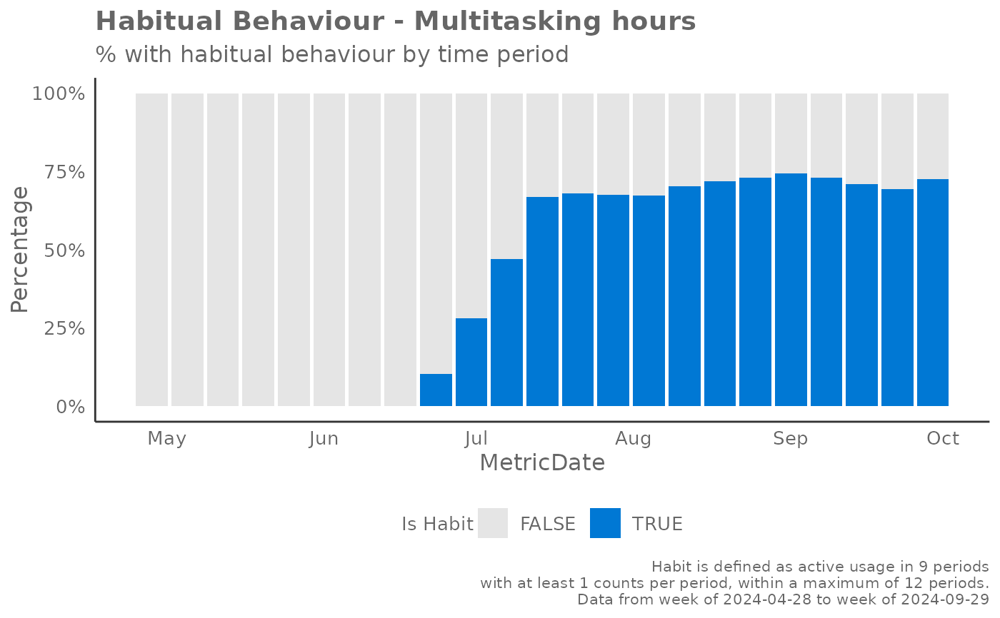

Identify whether a habitual behaviour exists over a given interval of time
Source:R/identify_habit.R
identify_habit.RdBased on the principle of consistency, this function identifies whether a habit exists over a given interval of time. A habit is defined as a behaviour (action taken) that is repeated at least x number of times consistently over n weeks.
Usage
identify_habit(
data,
metric,
threshold = 1,
width,
max_window,
hrvar = NULL,
return = "plot",
plot_mode = "time",
fill_col = c("#E5E5E5", "#0078D4")
)Arguments
- data
Data frame containing Person Query to be analysed. The data frame must have a
PersonId,MetricDateand a column containing a metric for classifying behaviour.- metric
Character string specifying the metric to be analysed.
- threshold
Numeric value specifying the minimum number of times the metric sum up to in order to be a valid count. A 'greater than or equal to' logic is used.
- width
Integer specifying the number of qualifying counts to consider for a habit. The function assumes a weekly interval is used.
- max_window
Integer specifying the maximum unit of dates to consider a qualifying window for a habit. If your data is grouped at a weekly level, then
max_window = 12would consider 12 weeks.- hrvar
Character string specifying the HR attribute or organisational variable to group by. Default is
NULL.- return
Character string specifying the type of output to be returned. Valid options include:
"data": Returns the data frame with the habit classification."plot": Returns a ggplot object of a boxplot, showing the percentage of periods with where habitual behaviour occurred."summary": Returns a summary table of the habit analysis.
- plot_mode
Character string specifying the type of plot to be returned. Only applicable when
return = "plot". Valid options include:"time": Returns a time series plot with the breakdown of users with habitual behaviour."boxplot": Returns a boxplot of the percentage of periods with habitual behaviour.
- fill_col
Character vector of length 2 specifying the colours to be used in the plot. Only applicable when
return = "plot"andplot_mode = "time".
Details
Each week is considered as a binary variable on whether sufficient action has
been taken for that given week (a qualifying count). Sufficiency is
determined by the threshold parameter. For instance, if the threshold is
set to 2, this means that there must be 2 qualifying actions (e.g. summarise
meeting in Copilot) in a week for there to be a qualifying count for the
week.
One way of determining the parameters would be to consider, how many counts
of width should occur within a max_window period for it to be considered
a habit?
Examples
# Return a plot
identify_habit(
pq_data,
metric = "Multitasking_hours",
threshold = 1,
width = 9,
max_window = 12,
return = "plot"
)

# Return a summary
identify_habit(
pq_data,
metric = "Multitasking_hours",
threshold = 1,
width = 9,
max_window = 12,
return = "summary"
)
#> # A tibble: 21 × 2
#> Statistics Value
#> <chr> <dbl>
#> 1 Most recent week - Total persons with habit 218
#> 2 Most recent week - % of pop with habit 0.727
#> 3 Total Persons who have lost habit 128
#> 4 % of Persons who have lost habit 0.427
#> 5 Total Persons who have gained habit 287
#> 6 % of Persons who have gained habit 0.957
#> 7 Mean - % of Person-weeks with habit 0.405
#> 8 Min - % of Person-weeks with habit 0
#> 9 p10 0.126
#> 10 p25 0.293
#> # ℹ 11 more rows